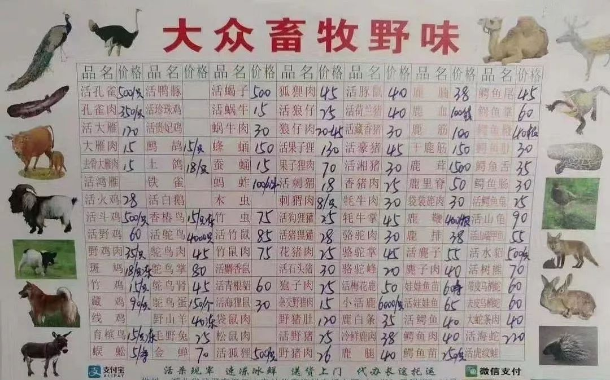

现场 | 武汉新型肺炎：为何直到今天才引起更大注意？
原文链接 备份链接 1月20日官方公布的感染武汉新型冠状病毒患者激增之前，武汉街头看起来和平时没多少不同。从1月20日开始，戴口罩的人突然多了起来。但其实这场病毒的袭击从大约一个月前就开始了，直到今天才引起更大范围的注意。 记者 | …

17年来，国家对野生动物的保护和销售不断加严。不过，监管困难重重，非法捕猎和销售多年未禁，风险仍存。
全文4285字，阅读约需8分钟
腊月二十七这天，林木决定放弃春节回老家打竹鼠吃。
前一晚，一则“武汉新型冠状病毒很可能来自野生动物”的信息，多次在他手机屏幕弹窗出现。作出以上论断的，是国家卫健委高级别专家组组长、中国工程院院士钟南山。
钟南山在接受央视连线时说，此次肺炎疫情的病原很大可能来自野生动物，“比如竹鼠”。
这起可能由野生动物引发的新疫情迅速蔓延，截至21日晚，各地确诊新型冠状病毒肺炎已超300例。
一些人很自然地回想起17年前的SARS，同样因野生动物引发。
17年来，国家对野生动物的保护和销售不断加严。不过，监管困难重重，非法捕猎和销售多年未禁，风险仍存。
━━━━━
摆上餐桌的竹鼠
在钟南山将“竹鼠”和新型冠状病毒联系起来之前，在广州工作的林木对于回清远老家过年充满期待，其中包括摆上餐桌的各种野味。
野味是广东人的心头爱。有人形容广东人什么都爱吃，尤其是天上飞的、地上跑的、水里游的。
林木专门研究过这个问题。
广东依山傍水，还临海，物资丰富，靠山吃山、靠水吃水，广东人偏爱原汁原味。林木说，相比猪、牛、羊、鱼，野味的口感更原始纯正，没有掺杂饲料和激素，“在口感和心理上，感觉纯天然、无污染。”
在各式野味中，林木偏好竹鼠。
竹鼠因吃竹而得名，原本属珍贵野生动物，全世界共有3属6种。在我国，主要分布在南方地区。部分竹鼠濒临灭绝或极为少见，例如花白竹鼠，属于保护动物。不过，由于具有较高的经济价值，我国已实现竹鼠规模化养殖。
以前吃竹鼠，林木一般都和朋友上山去捕。如今常年在外工作，无暇打竹鼠，只有过年才偶尔吃到。
几天前，妈妈跟林木说，过年了，专门备了一些竹鼠、野兔和蛇，等他回家一起吃。21日下午，林木给妈妈打电话说，野味别做了，原本自己过年回家打竹鼠，他也放弃了。
距离这通电话数小时前，广东发布春节消费提示，呼吁市民不食用野生动物，避免接触不明来源的病菌。
就在前一晚，钟南山院士表示，此次武汉新型冠状病毒很大可能来自野生动物，比如竹鼠等。
而这些野生动物，很大可能来自此次肺炎疫情的最初暴发地，武汉华南海鲜市场。
多方信息显示，华南海鲜市场不仅卖海鲜，也卖“野味儿”。有网友发文称，华南海鲜市场有野鸡、蛇、土拨鼠等动物宰杀出售。
据武汉市市场监管局2019年9月25日发布的野生动物市场专项整治行动消息，华南海鲜批发市场有近8家商户售卖野生动物，包括虎斑蛙、蛇、刺猬等。
在当天的行动中，执法人员逐一检查了这些商户的野生动物经营许可审批文件、营业许可证，并严禁其经营未获审批的野生动物。
不过，当天未发现违法经营行为。
网传的武汉华南海鲜市场“大众畜牧野味”价目表。
━━━━━
明卖的野味
听说这个卷入舆论和监管漩涡的市场卖竹鼠，林木并不稀奇。
1月21日，新京报记者来到华南海鲜市场，此前因售卖多种野味备受争议的“大众畜牧野味”商铺，目前已闭店。
网传这家大众畜牧野味的菜单上，品名上百种，包括竹鼠、狗狸獾、猪狸獾、果子狸、狐狸、树熊、孔雀、大雁等，均可活杀现宰，速冻冰鲜，送货上门。
市场一名商铺老板说，自己此前曾到过“大众畜牧”店中，店里以售卖羊肉等常见肉类为主。另有一名商铺老板说，市场休业前，“大众畜牧”一直正常营业，“这家店确实售卖野味。”
另一位李姓老板透露，市场售卖野生动物的摊位，主要集中在西区中部一条长廊，“偷着卖那多少是有的。”
华南海鲜市场的脏乱差，长期被诟病。
据悉，华南海鲜市场是武汉最大的海鲜批发市场，批零兼营，是武汉市民和酒店餐馆采购海鲜和野味的主要市场。
卫星地图显示，市场距离汉口火车站不足一公里，是武汉市人流最密集的区域之一。周边有多家快捷酒店，道路南侧紧邻两个大型商超、多个住宅区，以及医院、学校等人流密集场所。
天眼查信息显示，武汉华南海鲜市场有限公司成立于2005年，主营业务为市场物业管理、停车场经营；水产品、初级农产品的批发兼零售；食品销售。
市场位于武汉市江汉区发展大道207号，据媒体报道，这里东、西两个区域共有28条街，共计约有650余个摊位，从业人员1500余人。
“去过几次，污水横流，苍蝇蛮多”，有网友在论坛中这样投诉。2017年，还有网友就是否有拆迁计划在《领导留言板》提问，江汉区委督查室回应称，华南海鲜市场目前暂未列入江汉区“十三五”（2016-2020年）“三旧”改造规划范围。
今年1月1日，武汉市江汉区市场监督管理局、武汉市江汉区卫生健康局联合发布公告，对华南海鲜批发市场实行休市，进行环境卫生整治，开市时间另行通知。
1月21日，武汉市宣布继续加大华南海鲜批发市场休市后管控力度，24小时管控市场及其周边出入口。加大农（集）贸市场及各类经营场所排查。
新京报记者多次探访华南海鲜市场发现，目前市场保持关闭，警方拉起警戒线，多名身穿白色防护服的工作人员在现场检查并进行防疫工作。
不过，宿主究竟是谁，仍是未知数。
 1月21日，华南海鲜市场，网传图片所涉店铺已闭店。摄影/新京报记者 许雯
1月21日，华南海鲜市场，网传图片所涉店铺已闭店。摄影/新京报记者 许雯
━━━━━
SARS的前车之鉴
野生动物可能带来的又一次疫情，将人们的记忆拉到17年前的SARS。
林木的家，紧挨着中山大学附属第三医院。2002年底，全球首例SARS病人就在该医院被确诊。
“一开始不以为然，后来快速蔓延并出现死亡病例，都陷入恐慌。”林木回忆，当时传言中能预防非典的白醋、盐和板蓝根瞬间被疯抢，价格翻了几十倍不说，还全线断货。
他家在广州，工作在深圳，每天乘高铁通勤。他清晰记得，当时在进站口、单位门口，都要测体温。如果身边有人发烧，大家便一起劝他赶紧去医院检测。
2002年年底，在我国广东首次爆发的SARS，是本世纪初最严重的一次传染病，5个月内传播到全球27个国家和地区，造成了8000人感染，死亡病例接近800人。
一开始，医学界认为SARS是从果子狸而来。广东2004年年初发布一条禁令，全面捕杀野生动物市场的果子狸，取缔野生动物交易，关闭野生动物市场。
专家说，这个政策对控制SARS后期传播起了非常关键的作用，在那之后，广东再没有出现SARS新增病例。
到后来，中科院武汉病毒研究所石正丽团队多年跟踪研究发现，果子狸只是SARS冠状病毒的中间宿主，真正源头是云南省一些岩洞里的蝙蝠。SARS病毒是经过几个蝙蝠体内SARS样冠状病毒重组而来，偶然情况下感染了果子狸，再传染给人。
为何两次严重疫情的新型病毒，都指向野生动物？
此次发现的新型冠状病毒与SARS同为冠状病毒。北京大学医学部病原生物学系教授、博士生导师彭宜红接受采访时表示，野生动物是冠状病毒的常见宿主。
这类病原通常由蝙蝠等野生动物传染给哺乳动物，哺乳动物传染给人类。携带病原体的动物分泌物，可经呼吸道黏膜进入人体。比如，手上沾染了病原体，再去摸鼻子、揉眼睛，病毒都可以在黏膜细胞上大量增殖而进入体内发病。
果壳科普作家张博然分析，野生动物远居野外，不常与人类接触，身上携带的细菌和病毒研究程度远不如人类传染病充分，一旦被感染，很难迅速找到治疗方案。一旦具备传染性，更是难以控制。
“病毒还存在变异的可能。一些本寄居在动物身上的病毒在变异之后也会寄居在人类身上，同样难以短时间内破解。”张博然指出，在传染性方面，不仅食用野生动物存在风险，接触过野生动物的人可能也会被传染。“传染病的风险，主要就是靠近和接触，包括捕捉和出售，逛野味市场，买回去拔毛加工之类的流程。”
“建议大家尽量不要食用野生动物，官方也要加强宣传食用野生动物的危害。”张博然说。
眼下，只有找到宿主动物，并彻底进行源头整治，才能大概率防止疫情发生。
昨日，研究者最新进展显示，武汉新型冠状病毒与SARS及SARS样冠状病毒群在进化上非常“亲密”，拥有共同的外类群，可以推断它们的共同祖先是一类寄生于蝙蝠的冠状病毒。
研究者推测武汉新型冠状病毒的原生宿主为蝙蝠，不过从蝙蝠到人可能还存在更多的中间宿主。
━━━━━
野味文化暗网
今年元旦期间，林木回了趟家，约好了三五朋友，打算过年一起上山打竹鼠。
有人说目前野外竹鼠数量极少，林木却说，只要掌握了方法，一个小时就能打到数十只。
“我们一般傍晚先上山摸底，找好竹鼠的洞，洞口放一些诱饵和老鼠夹。天一黑，竹鼠全出来了。”林木说，类似华南海鲜城中的野味店，岭南地区还有不少。
野味究竟能否交易贩卖？
根据我国《陆生野生动物保护实施条例》，经营利用非国家重点保护野生动物或者其产品的，应当向工商行政管理部门申请登记注册，取得相关野生动物经营利用许可审批文件。
此外，暹罗鳄、虎纹蛙等9种人工繁育技术成熟稳定的国家重点保护野生动物也可以凭专用标识出售、购买。
“也就是说，从业者首先必须取得相关的售卖资格许可，同时售卖的必须是人工繁育的野生动物物种。”中国野生动物保护协会一名工作人员说。
该工作人员坦言，目前对野生动物经营的监管依然存在很大难度，“被售卖的野生动物来源很难确定，是野生的还是人工繁育的，来源只有经营者自己清楚。”据他分析，如果偷着卖，渠道来源就存疑，有可能存在非法猎捕等违法违规行为。有些商家可能存在没有办理相关经营利用许可证和养殖许可证的违规行为，售卖野生动物是否经过正规的检疫系统检测，是否有相关卫生检疫部门的许可，也无法得知。
显而易见，这些都将加剧风险。
长期来，国家相关部门对破坏野生动物资源的行为开展集中打击。
数据显示，2017年春季，全国森林公安机关开展了为期70天的“利剑行动”，集中打击、侦破了一大批破坏森林和野生动物资源的大案要案。行动期间，收缴野生动物10万余头（只），2018年该行动收缴野生动物12万余头。
为何屡禁不止？原国家林业局2017年曾分析认为，高额利润驱使野生动物案件依然高发。少数公众“野味文化”根深蒂固，致使需求不断加大，非法市场暗自形成。
另外，由于违法分子作案地点不固定、作案时间短，林政执法部门难以及时打击，处罚力度低，使得不法分子心存侥幸。象牙、犀牛角等价格昂贵的野生动物制品受到追捧，非法收购、出售国家重点保护珍贵、濒危野生动物制品案件有所增加。
1月21日下午，广东举行首场肺炎疫情发布会，明确提出，将严管严控野生动物市场，坚决取缔违法售卖野生动物行为。
林木感觉，经历过SARS，一部分广东人可能对野味不那么热衷了，学会与野生动物保持距离，但很多人仍以食野味为乐趣，不愿轻易改变饮食习惯。
昨晚，林木的朋友又给他打来电话，问他过年是否回家一起打竹鼠。
得知林木因肺炎疫情而放弃后，朋友有些诧异，笑着问，“吃这么多年不也没事儿？”
━━━━━
三部门：对未经检疫合格的野生动物，一律严禁进入市场
据国家林业和草原局官博消息，1月21日，国家市场监管总局、农业农村部、国家林业和草原局下发《关于加强野生动物市场监管 积极做好疫情防控工作的紧急通知》，要求各地林草、农业农村和市场监管部门依照《中华人民共和国野生动物保护法》规定和职责分工，突出饲养、繁育、运输、出售、购买等环节，加强检验检疫力度。
对未经检疫合格的野生动物，一律严禁进入市场。突出农贸市场、超市、餐饮等重点场所以及网站，开展联合检查，加强隐患排查，严厉打击野生动物违法违规交易，涉嫌犯罪的，及时移送司法机关。
新京报记者 邓琦 许雯 吴娇颖 沙雪良 应悦 马瑾倩 编辑 张畅
*值班编辑 李二号*


本文未经新京报书面授权不得转载使用
欢迎朋友圈分享

原文链接 备份链接 1月20日官方公布的感染武汉新型冠状病毒患者激增之前，武汉街头看起来和平时没多少不同。从1月20日开始，戴口罩的人突然多了起来。但其实这场病毒的袭击从大约一个月前就开始了，直到今天才引起更大范围的注意。 记者 | …
原文链接 备份链接 发热门诊排起长龙的就诊队伍似乎在宣告，这座城市正面临一次巨大的挑战。 全文4742字，阅读约需9分钟 ▲湖北各地出现口罩防护服等防疫物资短缺 拟请求国家支援。新京报我们视频出品（ID：wevideo） 距离除夕还有3 …
原文链接 备份链接 ********** *****网传“大众畜牧野味”的确存在，该商铺位于华南海鲜批发市场东区北侧，招牌名为“大众畜牧业味”。受市场整体休业影响，商铺已闭店。新京报记者多次拨打商铺电话，均无人接听。***** ▲1月21 …
原文链接 备份链接 【财新网】（驻香港记者 王端）武汉新型冠状病毒肺炎患者有急剧增加趋势。 1月20日凌晨，武汉卫健委方面更新的数据显示，1月18日和19日两日共新增136名确诊患者。其中，18日增59人，19日增77人。武汉患者共198 …
原文链接 备份链接 这一次的休市，几乎要使华南市场干货店老板曾嘉欣找不到生活的信念了。2019 年 11 月，因为一家卖辣椒等干货调料的商铺起火，曾嘉欣的商铺，以及铺子里 69 万的干货曾被付之一炬。借了贷款，用半个月的时间把商铺重新装 …